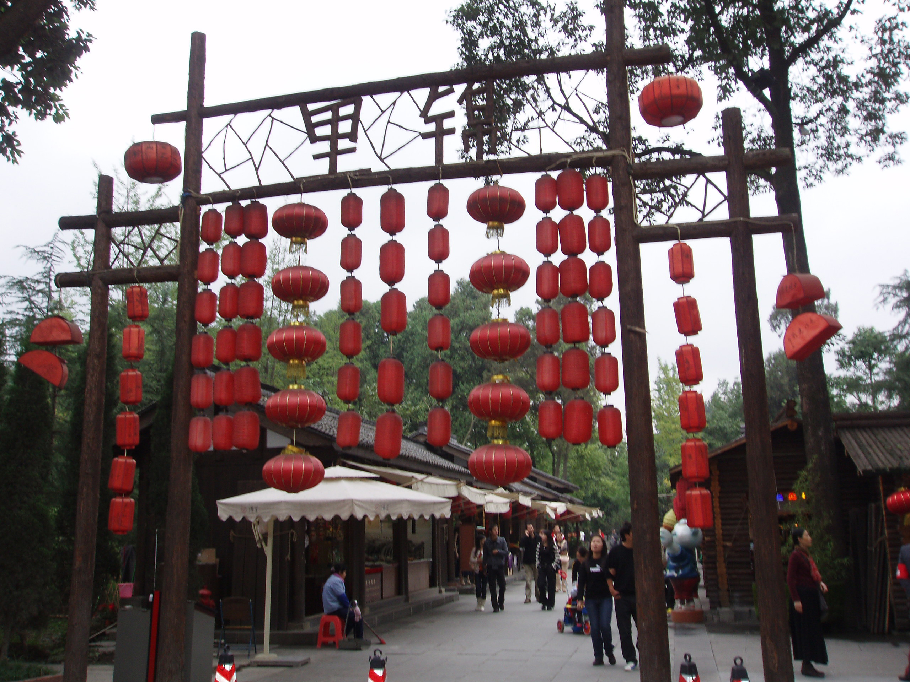
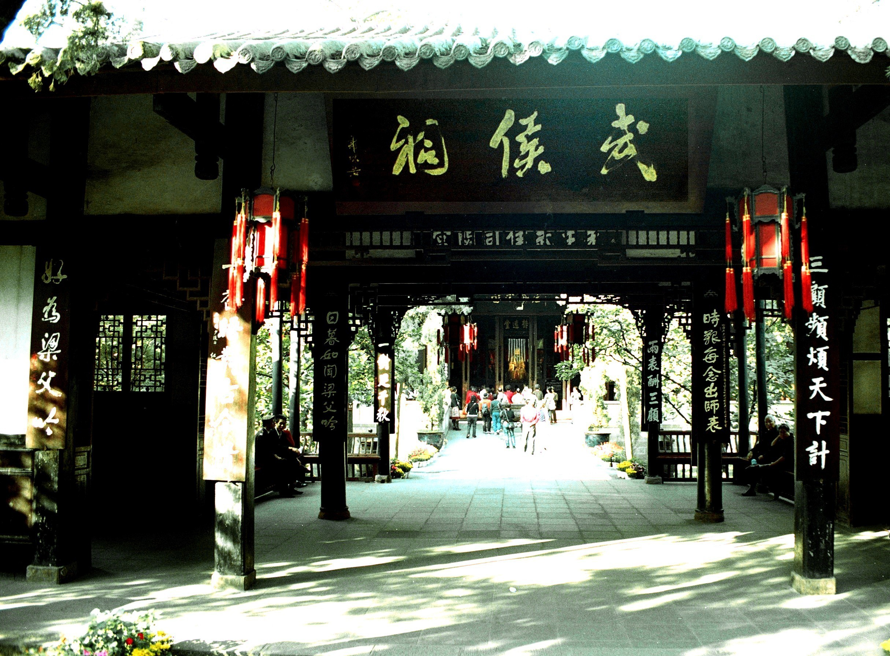

慢下来，感受成都的烟火、人文与诗意。
从街头小吃到地道川菜，开启味蕾之旅。
读懂成都三千年的城市故事。
成都，一座兼具历史底蕴与现代活力的城市。这里有千年古堰的智慧、街巷深处的茶香，也有令人垂涎的川味美食和充满创意的潮流生活。无论你是第一次到访，还是再次归来，都能在成都找到属于自己的节奏。

一口川味，爱上这座城。
在风景里遇见成都。

读懂成都的千年故事。
从清晨的茶馆到夜晚的街巷，感受这座城市自在、热情的生活气息。